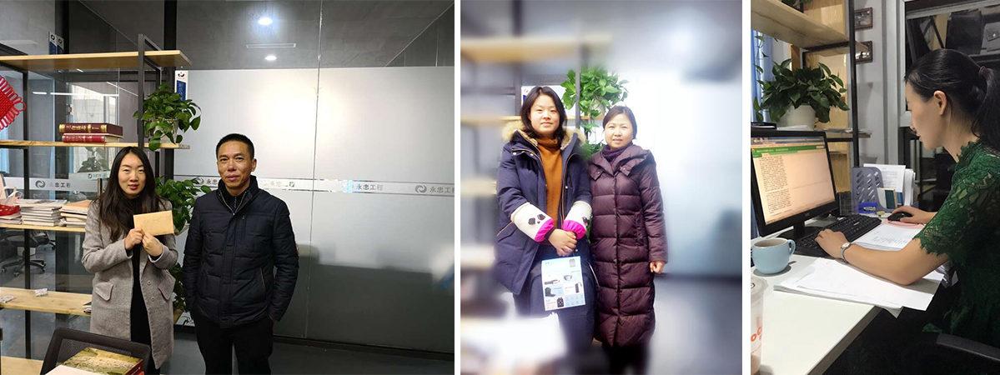

刘丽娟：设计部建筑所设计师刘丽娟自加入公司以来，一直承接着公司重要工作任务，勤恳踏实、积极奋斗。近期为保障射洪县妇幼保健院的设计质量和进度，该同志在严重感冒的情况下依然
兢兢业业坚持工作，业绩突出，充分体现公司“以奋斗者为本”的核心价值观及敬业精神，公司特号召全体员工向刘丽娟同志学习，并以精美奖品一份以作鼓励！
魏权： 市场经营部投标专员魏权，在射洪县太和镇第七小学校扩建项目和射洪县太和镇第四小学扩建项目的顺利中标中，该同志在经营部徐总监的统筹安排下，全过程尽心尽力统筹投标工作，
努力协调各方关系，最终完成此两个项目的顺利中标，为2018年的市场经营部投标工作打了第一场漂亮的硬仗。公司特号召全体员工向魏权同志学习，并以精美奖品一份以作鼓励！
聂敏加： 市场经营部专员聂敏加17年12月独自出差甘孜、炉霍、德格，不畏路途遥远艰辛，顺利完成德格县组织部和德格县文旅公司可研合同签订以及德格县垃圾填埋场和甘孜县风貌改造设计合
同签订。为弘扬该同志不畏艰辛的奋斗者精神，市场经营部特申请奖励，以资鼓励！
